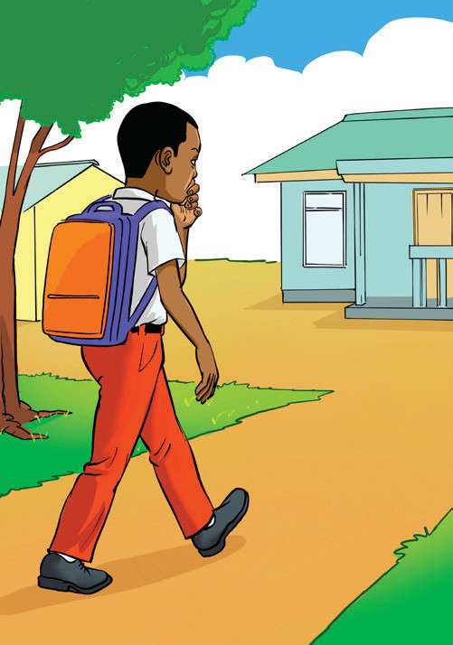
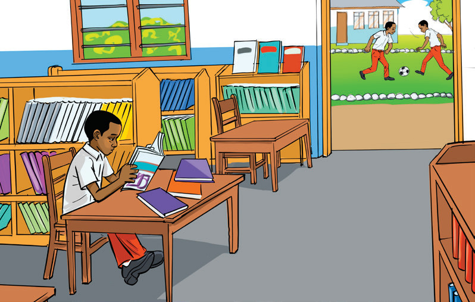
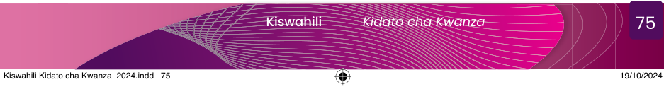

Shughuli ya 7.1
Chunguza picha 1 - 6, kisha andika habari yenye maneno yasiyopungua 150 kwa kuzingatia taratibu za uandishi.
1

23

45
6

Chunguza picha 1 - 6, kisha andika habari yenye maneno yasiyopungua 150 kwa kuzingatia taratibu za uandishi.

2
4